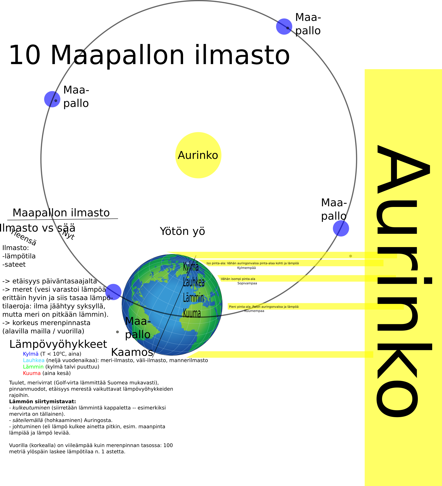

Ohjeet kotitöihin toiselle viikolle. Lyhyemmät ohjeet ilmestyvät myös Wilmaan ennen kutakin tuntia.
Kaikkien tehtävien palautukset löytyvät peda.netistä. Kaikilla on sinne pääsy ja homma on helppo.
Kaikkien tehtävien palautukset löytyvät peda.netistä. Kaikilla on sinne pääsy ja homma on helppoa.
| Klo | Ma | Ti | Ke | To | Pe |
|---|---|---|---|---|---|
| 08.30—10.00 | Matikka | ||||
| 10.10—10.55 | Fysiikka | ||||
| 11.40—12.25 | Matikka | ||||
| 12.30—13.15 | Matikka | ||||
| 13.40— | Maantieto |
Matikan tunnit pidetään tiistaina normaaliin aikaan.
Tiistaina aloitettiin geometrialla, kirja s 192—194 (tai 195). Laske tehtävät vihkoon. Huomenna koitetaan saada selkeämpi ote. Ei tarvitse palauttaa pedaan, mutta tee tehtävät vihkoon. Katson ne sitten joskus — toivottavasti.
Keskiviikkona geogebra-3d-harjoituksia. Oikealla hiiren napilla ruutu pyörii. Tehtävä 1: Käytä geogebralla kuvaan vihreällä merkittyjä työkaluja ja piirrä niillä
sekä kääntele niitä vinoon.
Tehtävä 2: Piirrä kuutiorakennelma eli pino kuutioita.
Tehtävä 3: Piirrä kuutio ja avaa se net-työkalulla.
Palauta molemmat tehtävät peda.nettiin
Torstain geogebra/geometry-harjoitukset. Siirrytään 3D-avaruudesta kaksiulotteiseen. Hommiin:
Palauta kolme työtäsi pedaan kuvina.
Pidetään tunti normaalisti torstaina aamulla klo 0925 alkaen, kuten aina ennenkin.
Lue kirjasta kpl 4 sivuilta 22—25 ja tee työkirjasta tehtävät sivulta 22. Ei tarvitse palauttaa pedaan.
Pidetään mantsan tunti normaaliin aikaan perjantaina klo 13, jollei keksitä parempaa vaihtoehtoa.
Kotiin pedanetin tehtävät. Tuntimuistiinpanot tässä
Kaikkien tehtävien palautukset löytyvät peda.netistä. Kaikilla on sinne pääsy ja homma on helppo.
| Klo | Ma | Ti | Ke | To | Pe |
|---|---|---|---|---|---|
| 08.30—10.00 | Maantieto | Fysiikka | |||
| 10.10—10.55 | Matikka | ||||
| 11.40—12.25 | Matikka | Maantieto | |||
| 12.30—13.15 | Matikka | ||||
| 13.40— | Fysiikka | Matikka |
Palauta pedaan torstaina kuva viimeisimmästä matikan vihon sivusta, jotta tiedän missä menet.
Palauta pedaan.
Pidetään tunti normaalisti maanantaina ja perjantaiaamulla klo 0900 alkaen. Sitä ennen ehtii käymään aamulenkillä.
Maanantain lisätehtävä: Laske työ jonka oheinen härpäke kokee.
Palauta pedaan kuva perjantaihin mennessä.
Käytiin kpl 18 tehtävät läpi, ja kotiin tuli lukuläksy kpl 19.
Jatketaan kirjaa eteenpäin. Viikon 3 tehtävät keskiviikolle
Torstaina kappaleen 13 matkailu tehtävät pedaan ja pedasta.
Kaikkien tehtävien palautukset löytyvät peda.netistä. Kaikilla on sinne pääsy ja homma on helppo.
| Klo | Ma | Ti | Ke | To | Pe |
|---|---|---|---|---|---|
| 08.30—10.00 | Energia | ||||
| 10.10—10.55 | Matikka | Maantieto | |||
| 11.40—12.25 | Matikka | ||||
| 12.30—13.15 | Matikka | ||||
| 13.40—14.20 | Matikka | ||||
| 14.25— | Kemia |
Vielä lisää kertaustehtäviä:
Vastaukset osa 1 ja Vastaukset osa 2 kirjan tehtäviin.
Palauta pedaan kuva vikasta matikan vihon sivusta — näen missä päin menet.
Kpl XX Rasvat. Tee tehtävät työkirjasta sivulta 154—155.
Viimeinen (toivottavasti) karttatehtävät eli Suomen infrastruktuuri.
1. Suomen valtatiet ovat hauskasti nimettyjä pienillä kokonaisluvuilla (vaikka nykyään on käytössä myös Euroopan laajuinen E-numerointi). Merkitse karttaasi
Ja lisäksi muutama muu, mutta jätetään ne pois. Huomasitko numeroinnin?
Suomesta löytyy kaivoksia, mm
Merkitse karttaasi kaivokset ja kirjoita johonkin sopivaan kohtaan, mitä mineraalia mistäkin kaivoksesta louhitaan. Lopetettuja kaivoksia on vaikka kuinka paljon.
Paperitehtaita, kartonkitehtaita ja sellutehtaita on ollut vaikka kuinka paljon, mutta kyllä niitä vieläkin löytyy. Ei kirjoiteta niitä, koska ahdasta tulee.
Lopuksi Suomen rautatieverkko. Suuri osa siitä on sähköistetty, mutta osaan ajetaan dieselvetureilla. Isoihin kaupunkeihin pääsee junalla, eikä se useinkaan pysähdy pienempiin kyliin tai kaupunkeihin matkan varrella. Vilkaise kartasta, missäpäin mahdollisesti junia voisi kulkea.
Palauta karttasi pedaan.
Tee tehtävät 1—4 luvusta 4.2. Ekosysteemit ilmastonmuutoksessa. Palauta perinteiseen tapaan pedaan.
{kind=link}
{kind=link}
{kind=link}
{kind=link}
{kind=link}
{kind=link}
{kind=link}
{kind=link}
{kind=link}
{kind=link}
{kind=link}
{kind=link}
{kind=link}
{kind=link}
{kind=link}
{kind=link}
{kind=link}
{kind=link}
{kind=link}